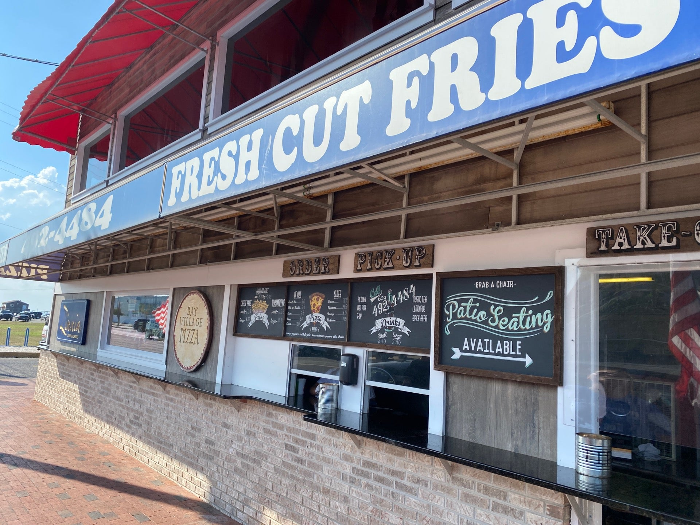

On 7-30-2023 History was made.
Seppe, Jig and Schmaibo went on their Third trip down to Long Beach Island.
We won some stuff at the arcade, went Metal Detecting, etc.
But the entire trip i was dreaming... salivating even, for one thing...
The Forbidden Fries.
For you see the previous two years (2022 & 2021) we tried eating at Bay Village Pizza.
The only issue is that the previous two years we went in the Fall/Winter.
This year we went in the summer, which turns out, is the only time they are open.
Seeing the pizzeria with people hoarding the front was a weird experience since i have seen it barren and empty more times than not.
The wait time for A Large Cheese Pie and Two Large Fries was about 20 minues, and the total was about $55 Before tip.
So after all these years, here is the comprehensive review of Bay Village Pizza.
7.5/10
The Pizza is an authentic New York style, with
a stuff bottom but not "Crunchy as a Cracker"
Pizza with Potato Chip Level Crunch is viewed Sinful here on Joesworld.online
The Cheese is nothing to write home about,
And the Slice itself is not a river of oil, so it is Seppe approved.
Dont get me wrong, its not bad at all, but deffinetly over shadowed by his older brother...
Would Seep take this to Bob Marley's House?
Yes

Would Seep stop a train for this?
no
9/10
These fries alone are worth the Two Hour drive.
I'm not a conspiracy theorist...
I'm not letting monkey brain talk for me...
These are Unironically S Teir Fries.
This is the DEFINITION of "Would stop a train for this."
The texture is a crunchy glass like exterior with a fluffy interior.
I'm gonna level with you, the ketchup they had was really good
Fries with no Ketchup would be an 8
They were definetly a little over salted but lets not nit-pick here
Would Seep take this to Bob Marley's House?
yes
Would Seep stop a train for this?
Yes